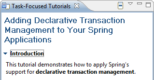

Spring Configuration Editor
The SpringSource Tool Suite now provides a rich forms-based UI for editing XML configuration files.

Here are descriptions of some of the interesting new features that were added to SpringSource Tool Suite 2.0:
The SpringSource Tool Suite now provides a rich forms-based UI for editing XML configuration files.
The Spring configuration editor now offers as you type validation and provides quick fixes for errors.
With cursor in the underlined region, Ctrl + 1 brings up all available quick fixes.
STS 2.0 now has a wizard for easing the creation and modification of a bean definition. The wizard can be opened from the File menu, the New wizard or the Spring Explorer.
STS 2.0 ships with a new tutorial that demonstrates how to apply Spring's support for declarative transaction management.
